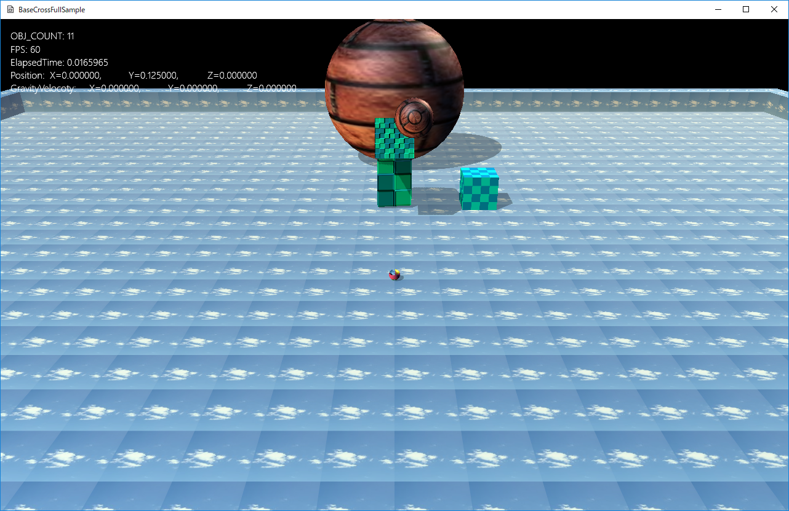

図1207a
プレイヤーはAボタンでジャンプ、Xボタンで球を発射します。この辺りは前項と同じです。
void FireSphere::OnUpdate() {
auto ptrTrans = GetComponent<Transform>();
if (ptrTrans->GetPosition().y > m_ActiveMaxY) {
float elapsedTime = App::GetApp()->GetElapsedTime();
auto BeforePos = ptrTrans->GetBeforePosition();
auto Pos = ptrTrans->GetPosition();
Pos += m_Velocity * elapsedTime;
ptrTrans->SetPosition(Pos);
auto ptrColl = GetComponent<CollisionSphere>();
auto ptrDraw = GetComponent<BcPNTStaticDraw>();
if (ptrColl->IsSleep()) {
ptrDraw->SetDiffuse(Col4(0.0f, 0.0f, 1.0f, 1.0f));
}
else {
ptrDraw->SetDiffuse(Col4(1.0f, 1.0f, 1.0f, 1.0f));
auto EnemyPtr = GetStage()->GetSharedGameObject<EnemyBox>(L"EnemyBox");
Vec3 HitPoint;
TRIANGLE tri;
bool isModelHit = false;
if (EnemyPtr->IsHitSegmentTriangles(BeforePos, Pos, tri,HitPoint)) {
//スパークの放出
auto PtrSpark = GetStage()->GetSharedGameObject<MultiSpark>(L"MultiSpark");
PtrSpark->InsertSpark(HitPoint);
isModelHit = true;
}
else {
auto BonePtr = GetStage()->GetSharedGameObject<BoneChara>(L"BoneChara");
if (BonePtr->IsHitSegmentTriangles(BeforePos, Pos, tri,HitPoint)) {
//スパークの放出
auto PtrSpark = GetStage()->GetSharedGameObject<MultiSpark>(L"MultiSpark");
PtrSpark->InsertSpark(HitPoint);
isModelHit = true;
}
}
if (isModelHit) {
m_Velocity.reflect(tri.GetNormal());
if (m_Velocity.length() > 20.0f) {
m_Velocity.normalize();
m_Velocity *= 20.0f;
}
}
}
}
else {
SetUpdateActive(false);
SetDrawActive(false);
return;
}
}
if (EnemyPtr->IsHitSegmentTriangles(BeforePos, Pos, tri,HitPoint)) {
bool EnemyBox::IsHitSegmentTriangles(const Vec3& StartPos, const Vec3& EndPos,
TRIANGLE& tri, Vec3& HitPoint) {
auto PtrDraw = GetComponent<BcPNTStaticDraw>();
size_t hitIndex;
return PtrDraw->HitTestStaticMeshSegmentTriangles(StartPos, EndPos, HitPoint, tri,hitIndex);
}
if (EnemyPtr->IsHitSegmentTriangles(BeforePos, Pos, tri,HitPoint)) {
//スパークの放出
auto PtrSpark = GetStage()->GetSharedGameObject<MultiSpark>(L"MultiSpark");
PtrSpark->InsertSpark(HitPoint);
isModelHit = true;
}
if (isModelHit) {
m_Velocity.reflect(tri.GetNormal());
if (m_Velocity.length() > 20.0f) {
m_Velocity.normalize();
m_Velocity *= 20.0f;
}
}
void FireSphere::OnCollisionEnter(const CollisionPair& Pair) {
auto ptrTrans = GetComponent<Transform>();
auto shDest = Pair.m_Dest.lock();
m_Velocity -= shDest->GetVelocity();
m_Velocity.reflect(Pair.m_SrcHitNormal);
if (m_Velocity.length() > 20.0f) {
m_Velocity.normalize();
m_Velocity *= 20.0f;
}
}
void FireSphere::OnCollisionExcute(const CollisionPair& Pair) {
auto shDest = Pair.m_Dest.lock();
if (shDest->IsFixed()) {
//減速
m_Velocity *= 0.95f;
if (m_Velocity.length() < 0.05f) {
m_Velocity = Vec3(0);
}
}
}
void BallChara::OnUpdate() {
auto bonePtr = GetStage()->GetSharedGameObject<BoneChara>(L"BoneChara");
auto boneTrans = bonePtr->GetComponent<Transform>();
auto boneDraw = bonePtr->GetComponent<BcPNTnTBoneModelDraw>();
auto& bones = boneDraw->GetVecLocalBones();
Mat4x4 mat = bones[2];
auto mesh = boneDraw->GetMeshResource();
vector<Vec3> positions;
mesh->GetLocalPositions(positions);
Mat4x4 localMat;
localMat.translation(positions[1]);
localMat *= mat;
localMat *= boneTrans->GetWorldMatrix();
auto ptrTrans = GetComponent<Transform>();
ptrTrans->SetPosition(localMat.transInMatrix());
ptrTrans->SetQuaternion(localMat.quatInMatrix());
}
localMat.translation(positions[1]);
localMat *= mat;
localMat *= boneTrans->GetWorldMatrix();
ptrTrans->SetPosition(localMat.transInMatrix());
ptrTrans->SetQuaternion(localMat.quatInMatrix());